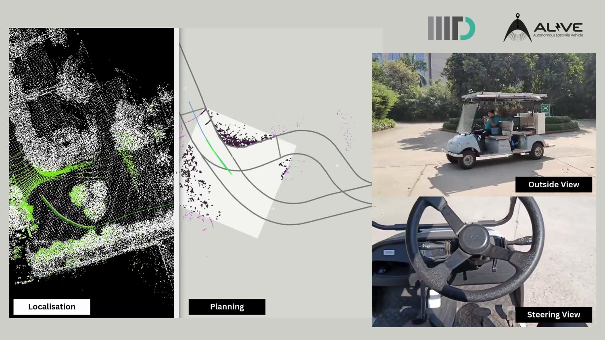

01 / FLAGSHIP RESEARCH PROJECT ONGOING
ALIVE / AUTONOMOUS CAMPUS ROBOTICS
Making autonomy
work in the real world.
Localization benchmarks, global LiDAR relocalization, RealSense/ZED X integration, online TEB planning, and a ROS1 ↔ ROS2 Zenoh bridge — all tested around a real autonomous golf cart.
6 SLAM families comparedROS1 ↔ ROS2 Zenoh integration

REAL MULTI-VIEW FIELD DEMOLOCALIZATION · PLANNING · CONTROL